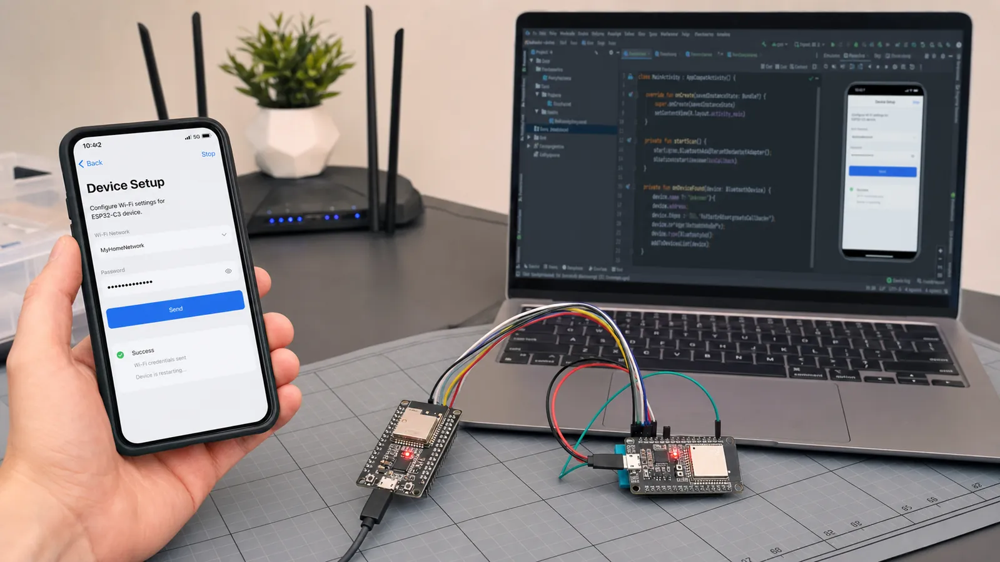

در سطح متوسط، مشکل اصلی دیگر ارسال یک عدد نیست؛ باید وضعیت، خطا، ذخیرهسازی و تجربه کاربر را مدیریت کنید. دستگاه ممکن است وسط تنظیم Wi-Fi خاموش شود، موبایل مجوز اسکن ندهد یا اتصال در نیمه کار قطع شود.
دستگاه در حالت Setup یک Service امن ارائه میدهد. موبایل SSID و Credential را در قطعههای کنترلشده میفرستد، دستگاه قالب را اعتبارسنجی و در حافظه امن ذخیره میکند و نتیجه اتصال را Notify میکند. داده حساس را در Advertising یا Log چاپ نکنید.
یک برد Peripheral سنسور و برد دیگر Central یا Gateway باشد. Central با UUID فیلتر کند، Discover انجام دهد و پس از قطع با Backoff دوباره تلاش کند. State Machine را از Task سنسور جدا کنید تا ناپایداری لینک کل برنامه را متوقف نکند.
اپ باید مجوزهای نسخه سیستمعامل، Scan timeout، فیلتر دستگاه، نمایش وضعیت اتصال و Unsubscribe را مدیریت کند. عملیات GATT را صفبندی کنید؛ اجرای همزمان چند Read و Write در بسیاری از APIهای موبایل نتیجه قابل اعتماد ندارد.
تنظیمات را با Version و CRC ذخیره کنید و مقدار نامعتبر را به پیشفرض برگردانید. Reconnect بینهایت و سریع باتری را خالی میکند. Backoff، سقف تلاش و گزینه ورود دوباره به Setup Mode تعریف کنید.
چهار Characteristic برای Command، SSID، Credential و Status در نظر بگیرید. موبایل ابتدا Session امن میسازد، فیلدها را مینویسد و فرمان Connect میدهد. دستگاه وضعیتهای validating، connecting، success یا error-code را Notify میکند. بعد از موفقیت سرویس Setup را محدود کنید.